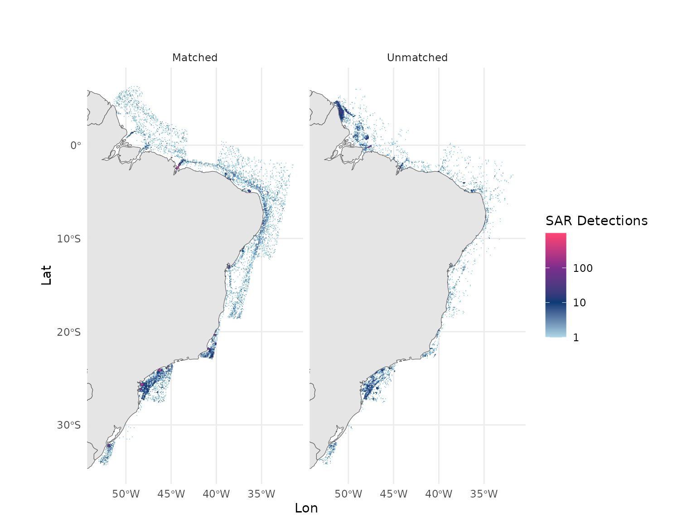

Introduction to SAR vessel detections
Source:vignettes/articles/sar_vessel_detections.Rmd
sar_vessel_detections.RmdFunction gfw_sar_vessel_detections() allows users to
access Global Fishing Watch’s dataset containing vessels detections
using Sentinel-1 Synthetic Aperture Radar (SAR),
initially published in Paolo et al.
2024.
This dataset is available publicly in Global Fishing Watch platforms, including our map, APIs, and R and python packages.
gfw_sar_vessel_detections() has the same general
structure of functions gfw_ais_presence() and
gfw_ais_fishing_hours(), with arguments for spatial and
temporal resolution, start and end dates, region options, and options
for grouping and filtering the results.
For more details about the usage of these parameters, please refer to the help menus in the function and to the vessel presence and fishing activity vignettes.
gfw_sar_vessel_detections(spatial_resolution = NULL,
temporal_resolution = NULL,
start_date = NULL,
end_date = NULL,
region_source = NULL,
region = NULL,
group_by = NULL,
filter_by = NULL,
key = gfw_auth(),
print_request = FALSE)SAR and AIS matching
A key characteristic of the SAR vessel detections dataset is that SAR vessel detections go through a matching process with AIS transmissions. For details about the matching process, please refer to Paolo et al. 2024.
Matched detections have therefore vessel identity information and other characteristics available in Global Fishing Watch AIS pipelines.
Unmatched detections can happen for several reasons, including that:
Not all vessels are required to use AIS devices, as regulations vary by country, vessel size, and activity.
There are large “blind spots” along coastal waters, arising from restrictions to access AIS data by satellites, or from poor reception due to high vessel density and low-quality AIS devices.
Vessels can turn off their AIS transponders or manipulate the locations they broadcast, operating “in the dark”, often against regulations. Not every vessel that turns off its transponder is necessarily engaging in suspicious or illicit activities, but the contrary tends to be true.
Basic usage
A simple call, with no group_by or
filter_by options will return a simple tibble
object with the number of vesselIDs detected and the number
of detections by pixel, at the requested resolution.
Let’s request the monthly detections in the Brazil EEZ for 2023.
id <- gfw_region_id(region = "Brazil", region_source = "EEZ") |>
# to select only the ids corresponding to EEZs
filter(POL_TYPE == "200NM") |>
dplyr::pull(id)
(brazil_sar <- gfw_sar_vessel_detections(spatial_resolution = "LOW",
temporal_resolution = "MONTHLY",
start_date = "2023-01-01",
end_date = "2024-01-01",
region_source = "EEZ",
region = id))
#> # A tibble: 11,522 × 5
#> Lat Lon `Time Range` `Vessel IDs` Detections
#> <dbl> <dbl> <chr> <dbl> <dbl>
#> 1 4.2 -50.9 2023-04 1 1
#> 2 -24.8 -47.5 2023-01 1 1
#> 3 -15.3 -38.5 2023-06 1 1
#> 4 -34 -52 2023-03 1 1
#> 5 -0.7 -37.5 2023-07 1 1
#> 6 -2.4 -44.2 2023-06 15 25
#> 7 -9.5 -33.4 2023-05 1 1
#> 8 -27.1 -46.8 2023-01 1 1
#> 9 4.4 -51 2023-10 1 1
#> 10 -2.1 -44.2 2023-07 2 2
#> # ℹ 11,512 more rows
group_by
gfw_sar_vessel_detections() has the same
group_by options than
gfw_ais_vessel_presence() and
gfw_ais_fishing_hours(): FLAG,
GEARTYPE, FLAGANDGEARTYPE, MMSI
and VESSELID.
Like in these other functions, group_by = "VESSEL_ID"
returns all available identity fields.
However, gfw_sar_vessel_detections() results can contain
NA values corresponding to unmatched detections.
Let’s repeat the request, this time grouping by MMSI:
(sar_by_mmsi <- gfw_sar_vessel_detections(spatial_resolution = "LOW",
temporal_resolution = "MONTHLY",
group_by = "MMSI",
start_date = "2023-01-01",
end_date = "2024-01-01",
region_source = "EEZ",
region = id))
#> # A tibble: 20,996 × 7
#> Lat Lon `Time Range` mmsi `Entry Timestamp` `Exit Timestamp`
#> <dbl> <dbl> <chr> <dbl> <dttm> <dttm>
#> 1 -1.9 -32.3 2023-10 538009746 2023-10-02 07:52:54 2023-10-02 07:52:54
#> 2 -13 -38.6 2023-03 636015411 2023-03-10 08:11:58 2023-03-10 08:11:58
#> 3 -24.2 -46.4 2023-12 538006311 2023-12-21 08:31:36 2023-12-21 08:31:36
#> 4 -24.2 -46.2 2023-01 241768000 2023-01-31 08:31:30 2023-01-31 08:31:30
#> 5 -25.5 -48.4 2023-02 412289000 2023-01-12 08:40:16 2023-10-10 08:32:05
#> 6 -3.6 -38.4 2023-01 538005596 2023-01-12 08:33:49 2023-07-20 08:09:59
#> 7 -1.8 -43.9 2023-02 477118900 2023-02-20 21:17:36 2023-11-17 08:14:12
#> 8 -24.1 -46.2 2023-03 477752500 2023-03-08 08:31:29 2023-12-30 08:03:33
#> 9 -26.3 -47.6 2023-09 710001106 2023-05-07 08:31:58 2023-09-16 08:32:30
#> 10 -5.6 -34.8 2023-12 311001087 2023-12-30 08:01:53 2023-12-30 08:01:53
#> # ℹ 20,986 more rows
#> # ℹ 1 more variable: Detections <dbl>In this example in the Brazilian EEZ, roughly a fifth of the detections were unmatched to AIS.
filter_by
To filter only by matched or unmatched detections, the function
allows for options "matched='true'" and
"matched='false'" in the filter_by
options:
Note: When filters are applied, the API does not return any field indicating this, so we recommend adding a column to identify the datasets. Another option is to use
NAvalues in the columns as indicators of unmatched detections.
Let’s fetch matched and unmatch detections, create a
matched column and bind the two tables to map matched and
unmatched detections in the region:
# matched ddetections
matched_sar <- gfw_sar_vessel_detections(spatial_resolution = "LOW",
temporal_resolution = "MONTHLY",
group_by = "VESSEL_ID",
start_date = "2023-01-01",
end_date = "2024-01-01",
region_source = "EEZ",
region = id,
filter_by = "matched='true'"
) |>
mutate(matched = "Matched")
matched_sar
#> # A tibble: 16,585 × 17
#> Lat Lon `Time Range` `Vessel ID` Flag `Vessel Name` `Entry Timestamp`
#> <dbl> <dbl> <chr> <chr> <chr> <chr> <dttm>
#> 1 -25.7 -48.2 2023-09 99dd5c86f-f… CYP OCEANIA GRAE… 2023-02-17 08:40:15
#> 2 -10.9 -36.9 2023-02 45513b744-4… MHL SSI PROVIDEN… 2023-02-21 08:03:26
#> 3 -2.4 -44.2 2023-07 d0c3dfc4a-a… BHS INES CORRADO 2023-07-02 21:17:41
#> 4 -26.2 -47.7 2023-09 29c294d96-6… BRA WILLIAN SANT… 2023-02-22 08:50:49
#> 5 -24.1 -46.1 2023-04 6a0833667-7… MLT LBC GREEN 2023-03-20 08:31:29
#> 6 -24.1 -46.1 2023-08 29e949513-3… MHL HYDRUS 2023-03-08 08:31:29
#> 7 -16.7 -38.2 2023-01 78a168660-0… PRT MSC CLEA 2023-01-28 08:04:42
#> 8 1.5 -47.2 2023-03 7797c8d4f-f… PAN CRIMSON ARK 2023-03-04 08:57:20
#> 9 -24.1 -46.2 2023-01 9b04d4155-5… LBR FENG MAY 2023-01-19 08:31:30
#> 10 -24.2 -46.3 2023-09 7b0efbfa5-5… CYM STOLT SUN 2023-04-13 08:31:30
#> # ℹ 16,575 more rows
#> # ℹ 10 more variables: `Exit Timestamp` <dttm>, `Gear Type` <chr>,
#> # `Vessel Type` <chr>, MMSI <dbl>, IMO <dbl>, CallSign <chr>,
#> # `First Transmission Date` <dttm>, `Last Transmission Date` <dttm>,
#> # Detections <dbl>, matched <chr>
# unmatched ddetections
unmatched_sar <- gfw_sar_vessel_detections(spatial_resolution = "LOW",
temporal_resolution = "MONTHLY",
group_by = "VESSEL_ID",
start_date = "2023-01-01",
end_date = "2024-01-01",
region_source = "EEZ",
region = id,
filter_by = "matched='false'") |>
mutate(matched = "Unmatched")
# bind rows:
(all_sar_detections <- dplyr::bind_rows(matched_sar, unmatched_sar))
#> # A tibble: 21,006 × 17
#> Lat Lon `Time Range` `Vessel ID` Flag `Vessel Name` `Entry Timestamp`
#> <dbl> <dbl> <chr> <chr> <chr> <chr> <dttm>
#> 1 -25.7 -48.2 2023-09 99dd5c86f-f… CYP OCEANIA GRAE… 2023-02-17 08:40:15
#> 2 -10.9 -36.9 2023-02 45513b744-4… MHL SSI PROVIDEN… 2023-02-21 08:03:26
#> 3 -2.4 -44.2 2023-07 d0c3dfc4a-a… BHS INES CORRADO 2023-07-02 21:17:41
#> 4 -26.2 -47.7 2023-09 29c294d96-6… BRA WILLIAN SANT… 2023-02-22 08:50:49
#> 5 -24.1 -46.1 2023-04 6a0833667-7… MLT LBC GREEN 2023-03-20 08:31:29
#> 6 -24.1 -46.1 2023-08 29e949513-3… MHL HYDRUS 2023-03-08 08:31:29
#> 7 -16.7 -38.2 2023-01 78a168660-0… PRT MSC CLEA 2023-01-28 08:04:42
#> 8 1.5 -47.2 2023-03 7797c8d4f-f… PAN CRIMSON ARK 2023-03-04 08:57:20
#> 9 -24.1 -46.2 2023-01 9b04d4155-5… LBR FENG MAY 2023-01-19 08:31:30
#> 10 -24.2 -46.3 2023-09 7b0efbfa5-5… CYM STOLT SUN 2023-04-13 08:31:30
#> # ℹ 20,996 more rows
#> # ℹ 10 more variables: `Exit Timestamp` <dttm>, `Gear Type` <chr>,
#> # `Vessel Type` <chr>, MMSI <dbl>, IMO <dbl>, CallSign <chr>,
#> # `First Transmission Date` <dttm>, `Last Transmission Date` <dttm>,
#> # Detections <dbl>, matched <chr>Let’s plot the resulting dataset:
sar_effort_light <- rev(c("#ff4573", "#7b2e8d", "#093b76", "lightblue"))
all_sar_detections |>
group_by(Lat, Lon, matched) |>
summarize(detections = sum(Detections, na.rm = T)) |>
ggplot() +
geom_tile(aes(x = Lon, y = Lat, fill = detections)) +
geom_sf(data = rnaturalearth::ne_countries(returnclass = "sf", scale = "medium")) +
coord_sf(xlim = c(min(all_sar_detections$Lon), max(all_sar_detections$Lon)),
ylim = c(min(all_sar_detections$Lat), max(all_sar_detections$Lat))) +
scale_fill_gradientn(
trans = "log10",
colors = sar_effort_light,
na.value = "lightblue",
labels = scales::label_comma()
) +
labs(title = "",
subtitle = "",
fill = "SAR Detections") +
theme(
panel.background = element_rect(fill = "aliceblue"),
axis.text.x = element_text(angle = 90),
plot.background = element_rect(fill = "white")
) +
facet_grid(~matched) +
theme_minimal()
#> `summarise()` has regrouped the output.
#> ℹ Summaries were computed grouped by Lat, Lon, and matched.
#> ℹ Output is grouped by Lat and Lon.
#> ℹ Use `summarise(.groups = "drop_last")` to silence this message.
#> ℹ Use `summarise(.by = c(Lat, Lon, matched))` for per-operation grouping
#> (`?dplyr::dplyr_by`) instead.
References
Paolo, F., Kroodsma, D., Raynor, J., Hochberg, T., Davis, P., Cleary, J., Marsaglia, L., Orofino, S., Thomas, C., Halpin, P., 2024. Satellite mapping reveals extensive industrial activity at sea. Nature 625, 85–91. https://doi.org/10.1038/s41586-023-06825-8